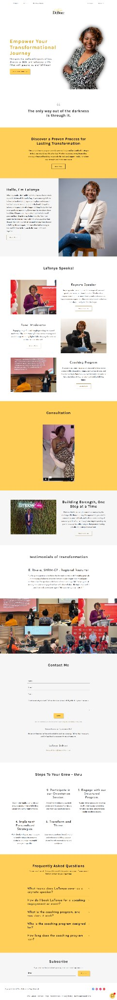

Real project · Speaker personal brand
Latonya Speaks
A speaker-led brand experience designed to make the person, message and next engagement step easier to grasp.
What the business needed
The website needed to establish the speaker's identity and message quickly while giving organizers and interested visitors a clear route to learn more or discuss an engagement.
What was built
The site was structured around the speaker's positioning, message and engagement information, with the personal brand kept central throughout the experience.
What is easier now
A visitor can understand who the speaker is, what the message is about and how to move toward an engagement without piecing the story together from scattered content.